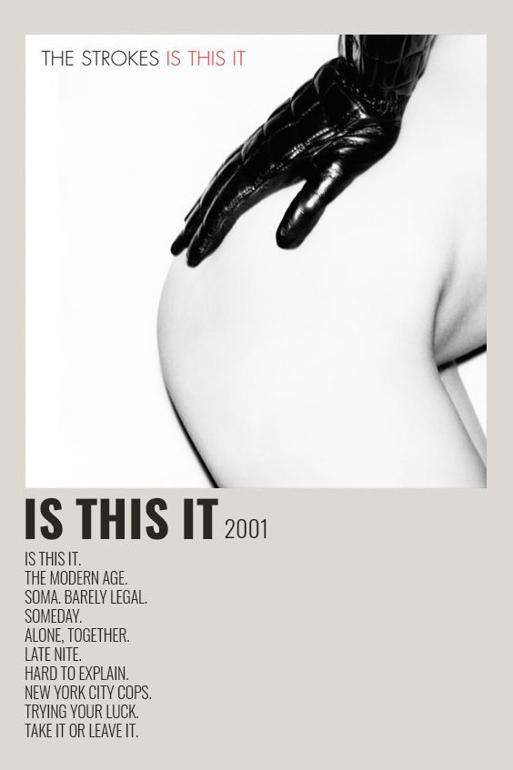
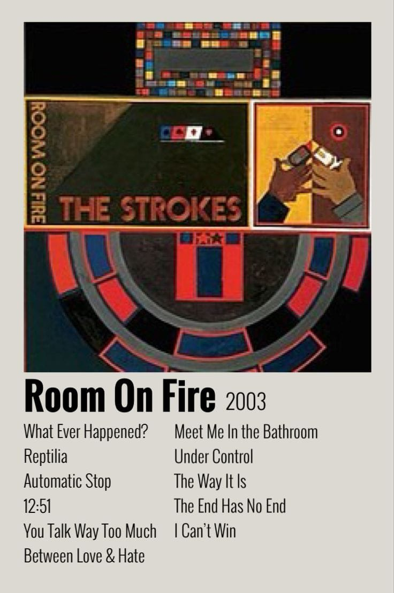
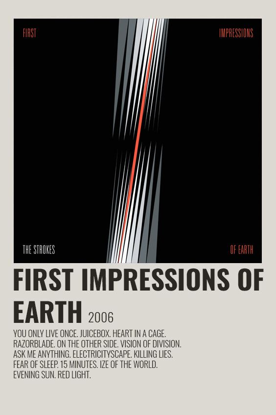
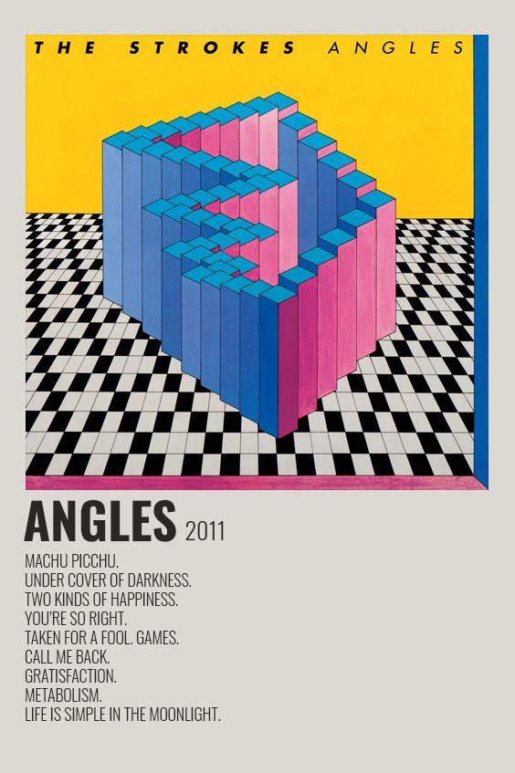
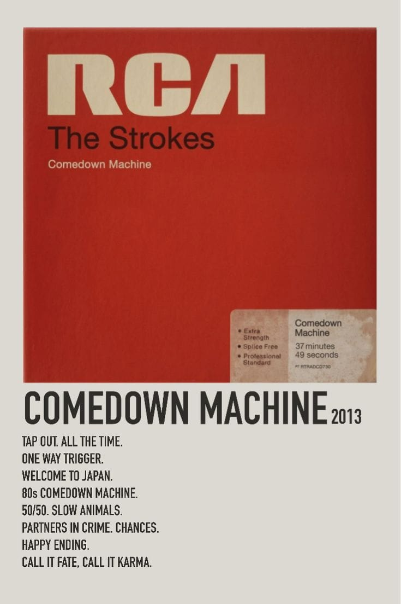
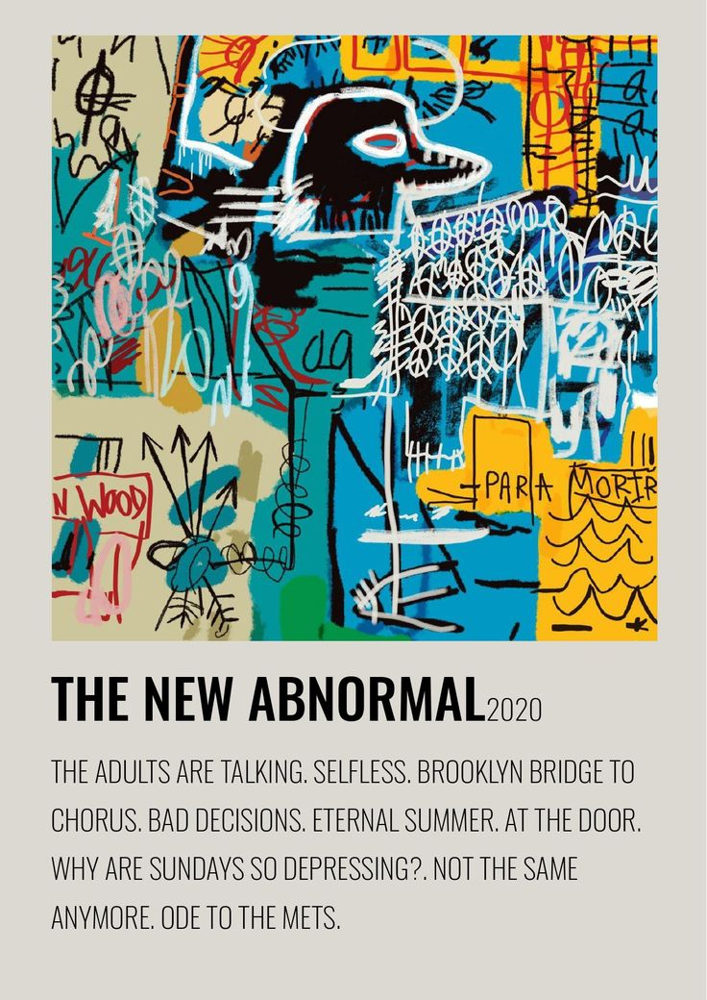

WorksSince their explosive emergence in the early 2000s, The Strokes have built a defining body of work that continuously reshaped the landscape of alternative and indie rock. Across six studio albums and multiple iconic singles, the Manhattan quintet evolved from raw, gritty garage-rock pioneers into sophisticated sonic architects—blending sharp dual-guitar harmonies, driving rhythms, and synth-infused new wave elements. Below is a curated selection of their most essential releases, detailing the pivotal records that defined their multi-decade musical journey. So, this is a small list of their works: |
Is This It (Album - 2001)Recorded with producer Gordon Raphael in a basement studio in Lower Manhattan, this groundbreaking debut album captured the raw energy and gritty spirit of early-2000s New York City. Characterized by its minimalist production, tight rhythm section, interlocking guitar riffs, and Julian Casablancas' relaxed vocal delivery, Is This It revitalized the global alternative scene. Featuring timeless anthems like "Last Nite" and "Someday", it is widely celebrated as one of the greatest and most influential debut records in rock history.  |
Room on Fire (Album - 2003) Serving as the highly anticipated follow-up to their debut, Room on Fire maintained the band's signature garage rock sound while introducing more intricate dual-guitar arrangements and subtle synth-like textures played through guitar pedals. The album explores themes of romantic tension and youthful anxiety with faster tempos and sharper precision. Highlights include explosive tracks like "Reptilia", the danceable "12:51", and the catchy "What Ever Happened?". |
First Impressions of Earth (Album - 2006)Marking a noticeable shift toward a heavier, more aggressive, and ambitious sonic direction, the band's third studio album showcased technical guitar solos, broader dynamic range, and existential lyrical themes. Driven by complex rhythm patterns and heavy basslines, it features standout tracks such as the intense lead single "Juicebox", the melodic classic "You Only Live Once", and the intricate fan-favorite "Ize of the World".  |
Angles (Album - 2011) Returning after a five-year hiatus, Angles represented a collaborative turning point for the group, with all members contributing heavily to the songwriting process. The album incorporates bright 80s new wave, dance-punk, and complex guitar layering, showcasing a lighter and more experimental aesthetic. Essential tracks include the upbeat and triumphant "Under Cover of Darkness" and the catchy "Taken for a Fool". |
Comedown Machine (Album - 2013)The band's fifth studio release is an enigmatic and experimental project that blends retro electro-pop, post-punk, and minimalist rock. Noted for its heavy use of vintage synthesizers, smooth bass hooks, and Julian Casablancas' expressive falsetto, the album embraced a subversion of traditional rock tropes. Standout highlights include the fast-paced synth track "One Way Trigger" and the groove-driven "Welcome to Japan".  |
The New Abnormal (Album - 2020) Recorded at Malibu's Shangri-La studio with legendary producer Rick Rubin, this sixth studio album marked a triumphant critical and artistic resurgence for the band. Seamlessly combining classic guitar rock with lush 80s synth-pop, post-punk grooves, and soaring vocal melodies, the album earned the band their first-ever Grammy Award for Best Rock Album in 2021. Key tracks include "The Adults Are Talking", "Eternal Summer", and the emotional epic "Ode to the Mets". |